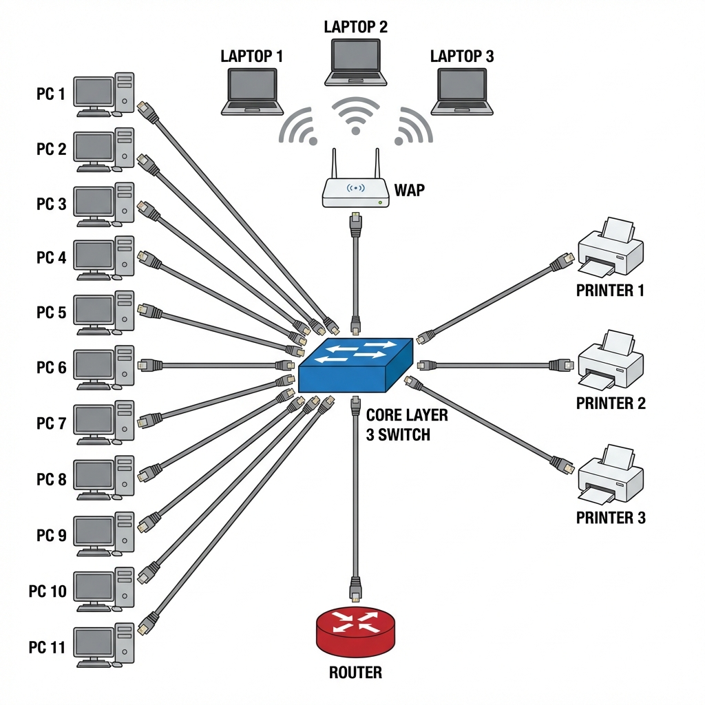

Simulación de Red para Empresa Mediana
Presentación del Proyecto
Este es mi proyecto final de Laboratorio Integral de Redes de Datos donde he creado una simulación completa de red empresarial usando Cisco Packet Tracer.
La idea era diseñar una red mediana que estuviera bien segmentada y organizada, simulando lo que sería una empresa real con diferentes departamentos y necesidades.
Datos del Proyecto
Autor: Nerea Fdez Fernández
Fecha: 15/01/2026
Herramienta: Cisco Packet Tracer
Objetivo: Crear una red segmentada con VLANs, seguridad y monitorización
¿Qué he hecho en este proyecto?
Se ha montado una red completa con:
- 11 ordenadores para usuarios
- 3 impresoras de red
- 3 portátiles conectados por WiFi
- 1 Access Point para la red inalámbrica
- 1 Switch de Capa 3 (el cerebro de la red)
- 1 Router para salida a internet
Todo conectado con cables directos RJ45 y WiFi para los portátiles.
Topología de la Red
Se ha usado una topología en estrella con el switch de capa 3 en el centro. Esto significa que todos los dispositivos se conectan a un punto central (el switch), lo que hace muy fácil gestionar y arreglar problemas.
graph TD
subgraph Internet["Internet"]
WAN[Conexión WAN]
end
subgraph Core["Switch Capa 3 Central"]
SW[Switch Principal<br/>Enrutamiento entre VLANs]
end
subgraph VLAN10["VLAN 10 - Ordenadores"]
PC[11 PCs<br/>192.168.10.10-20]
end
subgraph VLAN20["VLAN 20 - Impresoras"]
PR[3 Impresoras<br/>192.168.20.10-12]
end
subgraph VLAN30["VLAN 30 - WiFi"]
AP[Access Point<br/>SSID: wifi]
LAP[3 Portátiles<br/>192.168.30.10-12]
end
subgraph VLAN40["VLAN 40 - Router"]
R[Router<br/>192.168.40.10]
end
WAN --> R
R --> SW
SW --> VLAN10
SW --> VLAN20
SW --> AP
AP -.WiFi.-> LAP
style SW fill:#4a90e2,color:#fff
style VLAN10 fill:#d5f4e6
style VLAN20 fill:#fdeaa8
style VLAN30 fill:#d6eaf8
style VLAN40 fill:#fadbd8Vista de la Topología:

División en VLANs
Para organizar mejor la red, he dividido todo en 4 VLANs (redes virtuales):
| VLAN | Nombre | Para qué sirve | Red |
|---|---|---|---|
| VLAN 10 | Ordenadores | Los PCs de los trabajadores | 192.168.10.0/24 |
| VLAN 20 | Impresoras | Las impresoras de red | 192.168.20.0/24 |
| VLAN 30 | Punto Acceso | Portátiles conectados por WiFi | 192.168.30.0/24 |
| VLAN 40 | Router | Conexión al router de salida | 192.168.40.0/24 |

¿Por qué usar VLANs?
Separar la red en VLANs me permite:
- Tener más seguridad (los invitados WiFi no pueden acceder a todo)
- Mejor rendimiento (menos tráfico innecesario)
- Más fácil de gestionar y arreglar problemas
Dispositivos y Conexiones
Equipos que he usado:
11 ordenadores para los trabajadores
- IPs: desde 192.168.10.10 hasta 192.168.10.20
- Gateway: 192.168.10.1
- Máscara: 255.255.255.0
- Puertos del switch: FastEthernet 0/1 - 0/11
3 impresoras de red
- IP fijas: 192.168.20.10, .11 y .12
- Gateway: 192.168.20.1
- Máscara: 255.255.255.0
- Puertos del switch: FastEthernet 0/12 - 0/14
1 Access Point + 3 Portátiles
- Access Point: Puerto Fa0/15 del switch
- SSID: wifi
- Seguridad: WPA2-PSK
- Password: prueba1234
- Portátiles: IPs 192.168.30.10, .11 y .12
- Gateway: 192.168.30.1
1 Router para internet
- IP del router: 192.168.40.10
- IP del switch: 192.168.40.1
- Puerto: GigabitEthernet 0/1
Características Principales
Se ha implementado varias cosas importantes para que la red funcione bien:
Enrutamiento entre VLANs
El switch de capa 3 permite que las diferentes VLANs se comuniquen entre sí (cuando está permitido).
Seguridad con ACLs
Se ha puesto listas de control de acceso (ACLs) para que:
- ❌ Los portátiles WiFi NO puedan acceder a los PCs (VLAN 10)
- ❌ Los portátiles WiFi NO puedan acceder a las impresoras (VLAN 20)
- ✅ Pero SÍ puedan salir a internet
Esto está por seguridad, ya que el WiFi podría ser usado por alguien externo (invitado)
Seguridad de Puertos
Se ha configurado que solo un número limitado de dispositivos puedan conectarse a cada puerto del switch.
Spanning Tree Protocol (STP)
Se ha configurado para evitar bucles en la red y que funcione todo correctamente.
Monitorización SNMP
Se ha activado SNMP en el router para poder monitorizar el estado de la red (ver si está encendido, cuánto tiempo lleva funcionando, etc.).
Navegación de la Documentación
En las siguientes páginas explico todo el proceso paso a paso:
- Configuración de Red - Cómo configurar las VLANs, IPs y dispositivos
- Seguridad y ACLs - Las medidas de seguridad a implementar
- Pruebas y Monitorización - Cómo comprobar que todo funciona
- Conclusiones - Lo que aprendí y posibles mejoras
Mi Experiencia
Este proyecto me ha servido para entender cómo se monta una red real de empresa. Hay que entender como funcionan las VLANs y las ACLs, pero una vez lo entiendes, es fácil de trabajar. Lo más complicado fue hacer que el WiFi funcionara con las ACLs correctamente configuradas.
¡Como se montó todo! 👇